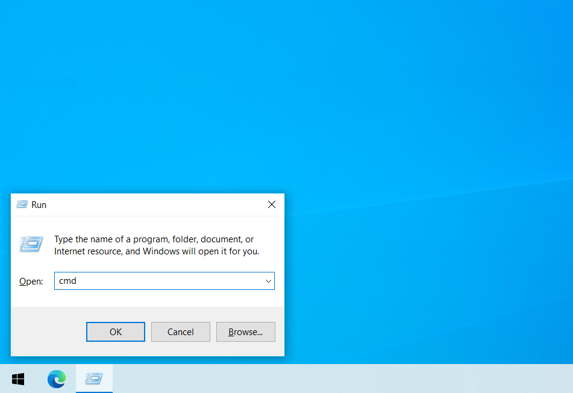
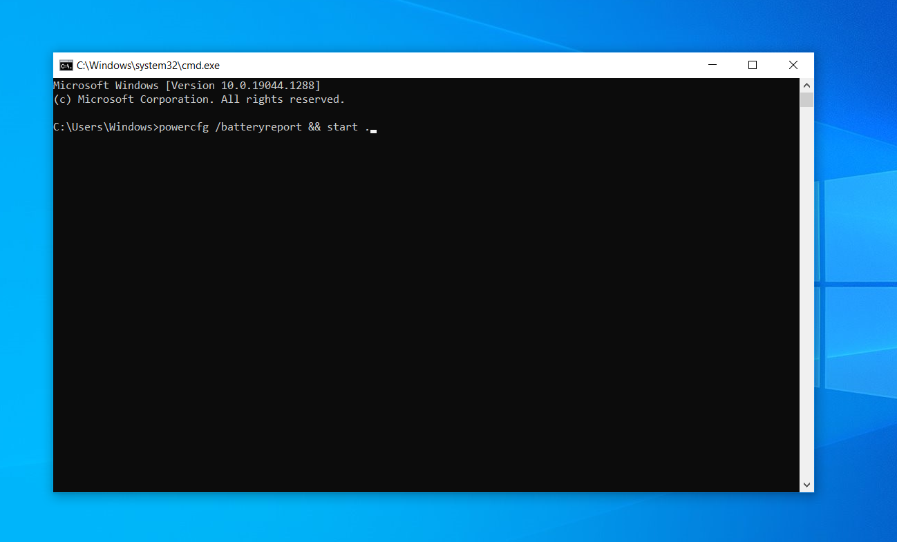
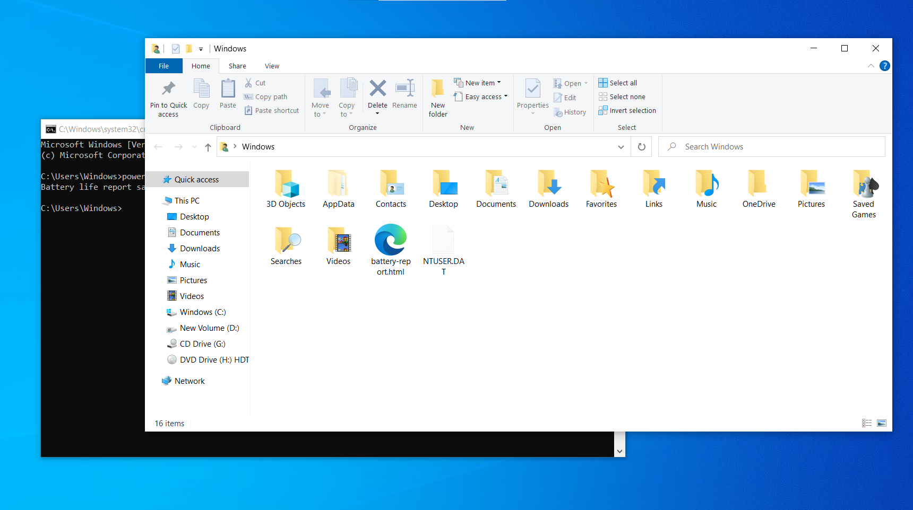
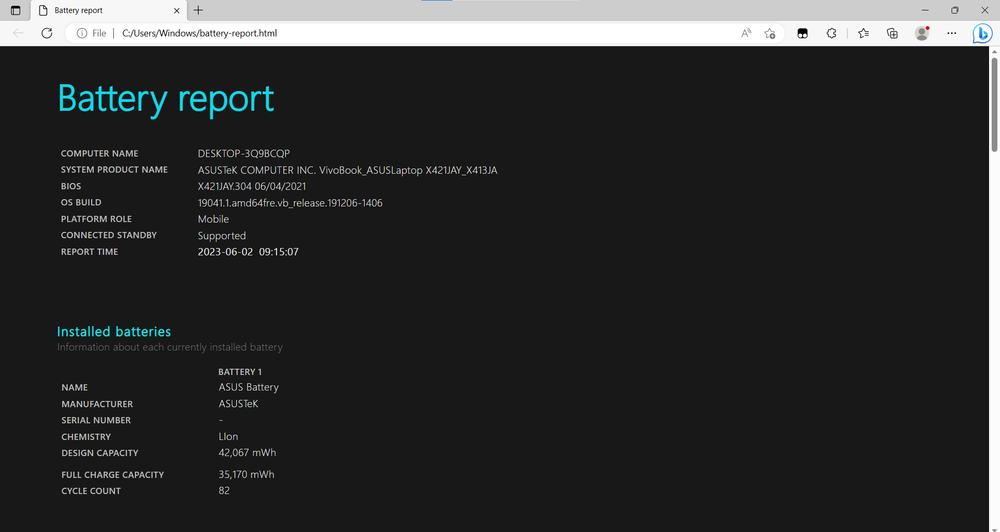

Để kiểm tra độ chai pin của laptop bạn sẽ dùng công cụ Command
Prompt có sẵn trên Windows 10 & 11
Để mở công cụ này lên bạn nhấn tổ hợp phím Windows + R và nhập vào:
cmd rồi nhấn Enter

Sau khi mở thành công Command Prompt thì bạn nhập vào:
powercfg /batteryreport && start . và nhấn Enter

Sau khi công cụ tạo file trích xuất thông tin pin thành công cũng là
lúc Windows Explorer mở cửa sổ chứa file trích xuất lên
Hãy mở file trích xuất có tên battery-report.html với
trình duyệt bất kỳ

Lúc này bạn chỉ cần quan tâm 2 thông số: Design Capacity (dung lượng
ban đầu từ nhà sản xuất) và Full Charge Capacity (dung lượng khi sạc
đầy hiện tại)
Điền 2 thông số trên vào công cụ bên dưới để tính độ chai pin

Tất nhiên bạn cũng có thể tự tính theo công thức:
Độ chai pin = ((Design Capacity - Full Charge Capacity) / Full Charge Capacity) * 100